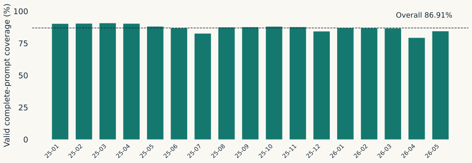
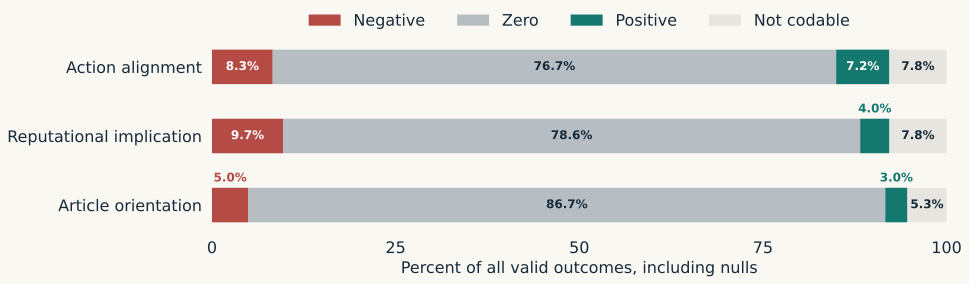
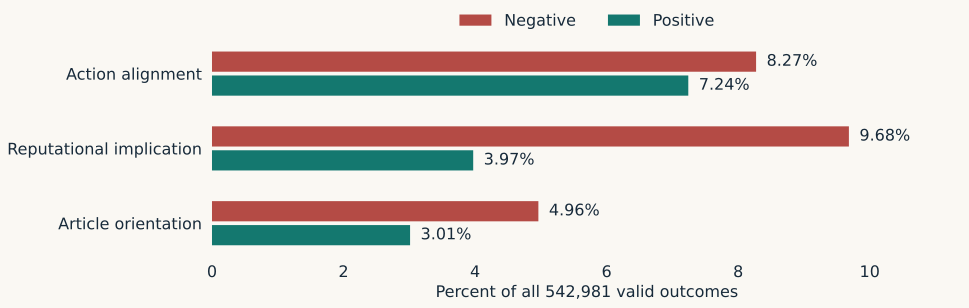

Beyond Sentiment Actions, Reputation, and Political Bias
PDRI/DevLab
Research in progress
Speaker notes The political meaning of a negative report A report can describe government abuse without adding hostile editorial language.
Coercion against peaceful opponents may strengthen an incumbent’s political position while damaging its legitimacy.
The same event can receive descriptive coverage, endorsement, or condemnation.
These distinctions matter for studying accountability, media control, and the information citizens receive.
Conceptual illustration. Definitions: complete prompt, October 20 release. 2 Speaker notes Three dimensions, one incumbent government Dimension Object of judgment Directional labels Action alignment The selected action relative to the incumbent Supports / opposes Reputational implication Performance or legitimacy implied by the action and tied facts Favorable / unfavorable Article orientation Explicit evaluation in the title or narrator’s voice Favors / criticizes
Zero = neutral, mixed, or insufficient directional evidence. Null = not codable.
Codebook and prompts/civic_20261020_complete_v1.txt 3 Speaker notes A synthetic contrast in narrator evaluation “Police dispersed peaceful anti-government demonstrators.”
Synthetic context explicitly links the police to the national cabinet.
Narration Align Rep Frame Descriptive account of that action +1 −1 0 Adds “a necessary operation that restored order” +1 −1 +1
The action and reputational implication stay fixed. The presentation cue changes.
Synthetic calibration examples 1–2, complete prompt. No empirical country claim. 4 Speaker notes How news becomes a coded observation Source selection Available news enters the civic corpus through collection and relevance rules. Supplied English The exact stored translated title and body enter the request. Action and government One prioritized action, actor, entity target, and national incumbent. Labels and evidence Three separate judgments, exact evidence spans, explicit nulls and flags. Codebook; October 17 input policy; October 20 complete prompt. 5 Speaker notes A fixed window for the first descriptive results 542,981
Valid complete-prompt outcomes
Frozen input-clear pool Stored complete-prompt outcomes Valid outcomes 624,751 552,208 542,981
370 source domains. 71 publication-country codes plus international/regional sources. Article counts are not unique event counts.
Frozen monthly snapshot and data card. Storage checkpoint: October 29, 2026, 05:20 UTC. 6 Speaker notes Complete-prompt coverage varies by month 
Denominator: each month’s input-clear source pool. Coverage does not measure model accuracy or coverage of all news.
data/monthly_coverage.csv. January 2025–May 2026. 7 Speaker notes Most outputs have no clear directional label 
Zero includes neutral, mixed, and insufficient evidence. An 86.70% zero framing share does not establish unbiased media.
data/label_summary.csv. Every dimension sums to 542,981. 8 Speaker notes Negative reputational implications are more frequent 
Shares retain all valid outputs in the denominator. This view displays only the directional categories.
data/label_summary.csv. Model-coded marginals, not validated population estimates. 9 Speaker notes Competing explanations for the pattern Explanation Evidence needed to assess it Events and civic-news selection Comparable events, topic/action mix, collection denominators Outlet and country composition Stable source panels and alternative weighting Editorial presentation Matched coverage of the same action with narrator cues Measurement error Blinded human coding and original-language review
The pooled distribution motivates a research design. It does not choose among these explanations.
Proposed analyses. See docs/research-design.md. 10 Speaker notes Two comparisons for studying media control Which events receive coverage? Compare the selection and prominence of government-relevant actions across outlets.
Needs a common event or exposure denominator.
How is the same event presented? Compare narrator evaluation within matched events, government targets, and time periods.
Needs joint article-level measures and credible event matching.
Ownership and regulatory variation become explanatory variables after measurement and comparability checks.
Research-design proposal; literature in references/references.bib. 11 Speaker notes Political implications and testable hypotheses Question Proposed test Remaining requirement Does media control alter government portrayal? Within-outlet change around ownership or regulatory shifts Credible timing and comparison group Do articles legitimize reputationally harmful conduct? Joint reputation × frame table within matched actions Semantic validation and joint data Does portrayal affect citizen attitudes? Link exposure to survey or experimental outcomes Audience data and identification
Proposed research agenda, not completed tests. 12 Speaker notes Current validation evidence Check What it establishes What remains open Schema and exact spans Output conforms to mechanical rules Correct political meaning Independent storage readback Records were stored as checked Accuracy or representativeness Exploratory AI reviews Concrete failure modes for follow-up Held-out human accuracy
A recent 40-case review identified five clear scope/extraction issues and upstream text problems. It is a diagnostic review, not an accuracy estimate.
Dated diagnostic reviews summarized in docs/validation.md. 13 Speaker notes A validation design for academic claims Freeze the task Prompt, translation policy, incumbent scope, and evaluation rubric. Sample the difficult and common cases Countries, languages, source types, action categories, nulls and all label directions. Code independently before reconciliation Blinded human judgments, original-language checks, and recorded disagreements. Report field-specific performance Confusion matrices, classwise recall/precision, uncertainty and subgroup failures. Proposed protocol: docs/validation.md. 14 Speaker notes The research package and next analyses Available with this talk Codebook and exact prompt Frozen monthly aggregates Reproducible tables and figures Research design and validation plan Next empirical work Joint label distributions Source/country composition checks Blinded semantic evaluation Historical entity standardization github.com/lin61302/media-bias-genai
Repository README and presentation plan. 15 Speaker notes Questions for discussion Which disagreements belong inside a useful reputational measure?
What comparison best separates event selection from evaluative presentation?
Which institutional setting offers a credible test of media control?
What evidence would connect portrayal to political attitudes?
Research in progress. October 29, 2026 descriptive snapshot. 16 Speaker notes Appendix: scope and attribution Boundary Coding consequence National incumbent at publication date A court, province, agency, or former leader is not automatically the incumbent One prioritized action The record does not inventory every event in the article Attributed allegation Code the accusation and retain claim status, not wrongdoing as proven fact Exact supplied English Complete use of supplied text does not guarantee a faithful original translation Missing action or government Apply dimension-specific null rules; framing can remain codable without an action
Exact complete prompt, October 20 release. 17 Speaker notes Appendix: research foundations Full citations and additional LLM/inference references are in the repository bibliography. These studies motivate the design; they do not validate this project’s outputs.
docs/research-design.md, docs/validation.md, references/references.bib 18 Speaker notes